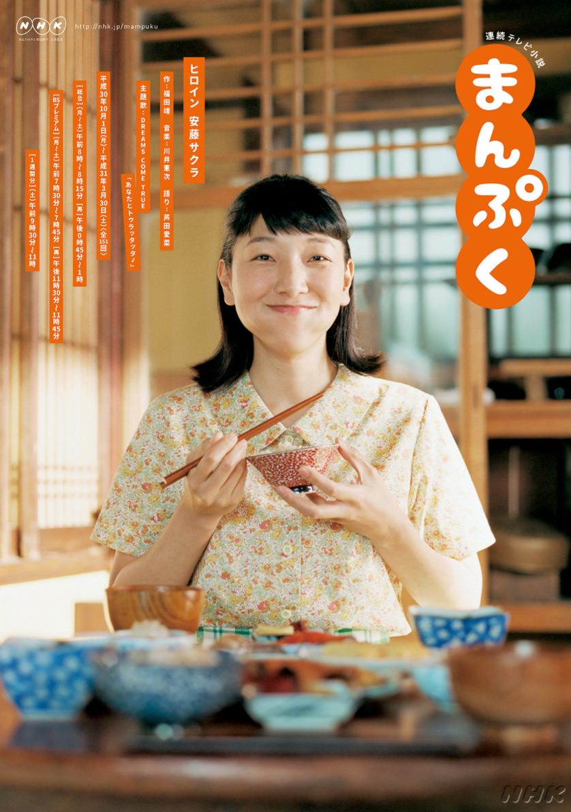
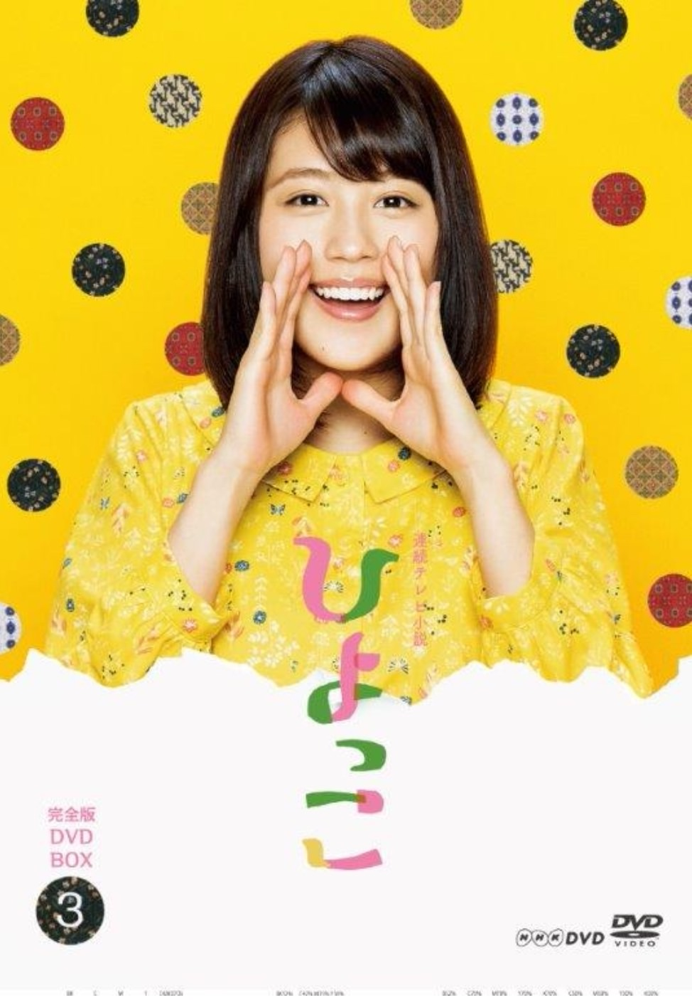
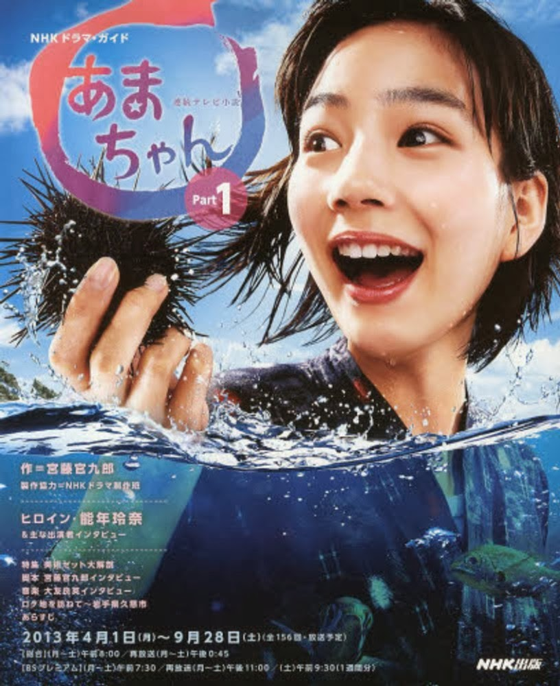
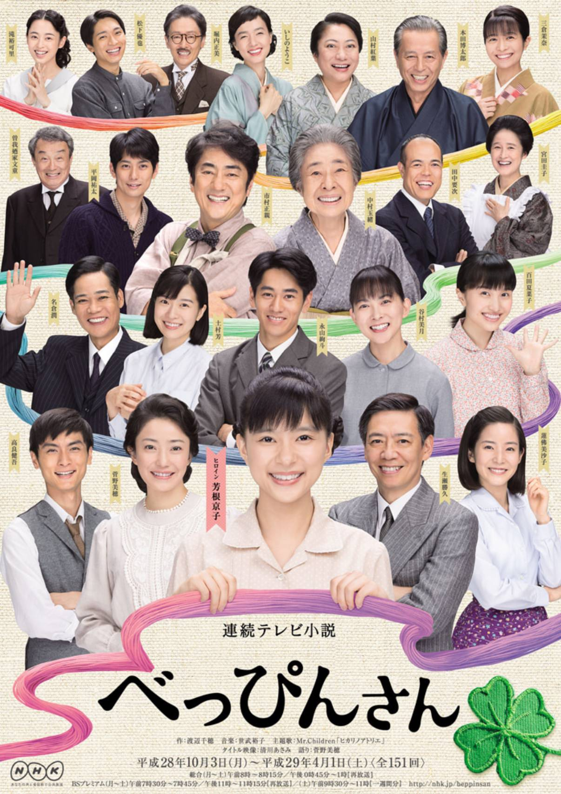
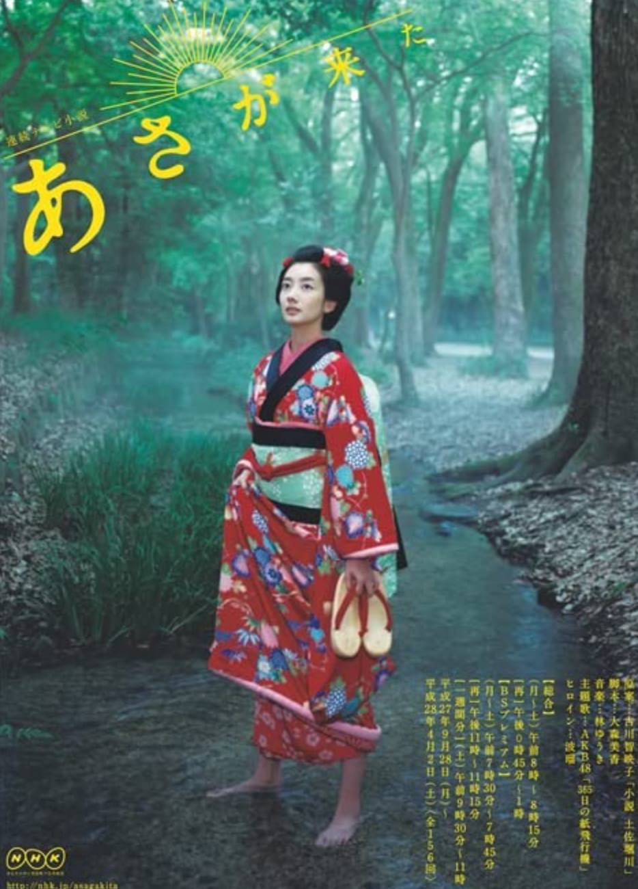

連続テレビ小説
Asadora Show's I've watched
along studying LS Courses!
まんぷく - Mampuku!

Promotion of まんぷく featuring Sakura Ando portraying Fukuko Imai
ひよっこ - Hiyokko!

Kasumi Arimura as Mineko Yatabe, a young woman who travels from rural Ibaraki Prefecture to Tokyo in the mid-1960s to find her lost father.
あまちゃん - Amachan!

Rena Nounen as a young woman who becomes an ama and then an idol before returning to Tohoku to help revive the area after the earthquake.
べっぴんさん - Beppinsan!

Kyoko Yoshine as Sumire, a brave woman who starts a company makes a dress for children. Based on the lives of Banno Atsuko, founder of Familiar.
あさが来た - Here come Asa!

Haru as Asa Imai Based on the life of Asako Hirooka, a pioneering Japanese businesswoman.